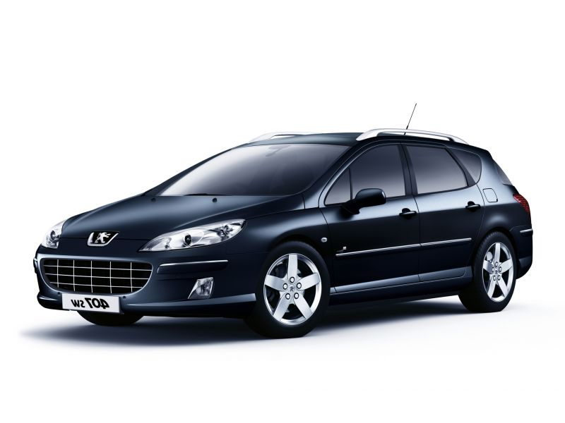

Automobilių supirkimas Vilniuje už gerą kainą

+370 673 80104
☠Skambinti
Nori parduoti automobilį? Sužinok kainą dabar!
Visų markių automobilių supirkimas
+370 673 80104
Patogus, paprastas ir greitas būdas parduoti savo automobilį
1.
Paskambinate mums arba užpildote anketą
2.
Gaunate mūsų pasiūlymą
3.
Apžiūrime automobilį Jums patogiu laiku ir patogioje vietoje
4.
Pasirašome pirkimo - pardavimo sutartį. Gaunate pinigus.
Kodėl mes ?
NES superkame automobilius palankiausiomis sąlygomis!
Aukščiausia kaina
Visad pasiūlysime ir sumokėsime už Jūsų automobilį geriausią kainą!
patogus laikas
Dirbame 7 dienas per savaitę visoje Lietuvoje, todėl į vietą atvyksime Jums patogiu paros laiku.
gryni pinigai
Už automobilį atsiskaitysime iš karto grynais pinigais!
Superkamų automobilių įvairovė
Superkame visų gamintojų ir tipų automobilius. Jie gali būti ir techniškai tvarkingi, ir nevažiuojantys, su defektais, be techninės apžiūros ir draudimo.
Automobilių transportavimas
Dėl gedimo ar pasibaigusios techninės apžiūros negalinčius dalyvauti eisme automobilius išsivežame patys.
Dokumentų tvarkymas
Jums nereikės rūpintis jokiais su automobilio pardavimu susijusiais dokumentais. Užpildome pirkimo - pardavimo sutartis, galime išrašyti pažymą, kad utilizavome automobilį.
KLIENTAI APIE MUS ?
Karolis, Vilnius
Gavau 700Euru už savo Toyota Avensis 1999metu. Ačiū už operatyvumą 😉
Aleksas, Vilniaus raj.
Ačiū Tomai, kad padėjai atsikratyti seno automobilio. ;DD
Jonas, Vilnius
Š aunuoliai vyrai, gerai dirba. Sėkmės.
Marius, Vilnius
Man reikėjo utilizavimo pažymos, ja gavau. Galite kreiptis, rekomenduoju.
Kontaktai
Tomo Bernato MB
Įmonės kodas 304878468
PVM mokėtojo kodas LT100012146911
El.paštas
info@automobiliu-supirkimas-1.lt
Telefonas
+370 673 80104
Kas žinotina parduodant automobilį?
Skubus automobilių supirkimas – vis dažniau pasirenkama galimybė
Nusprendus parduoti automobilį dažnais atvejais tikimasi, kad pirkėją pavyks rasti pakankamai greitai, nes nuo pardavimo greičio gali priklausyti ir tai, kada įsigysite naują transporto priemonę. Neverta net sakyti, kad kartais automobilio pirkėjo paieška gerokai užsitęsia, todėl nesiryžtama pirkti naują automobilį, ir tai atidedama neribotam laikui. Vis dėlto, išeitis tikrai yra – skubus automobilių supirkimas galės jums padėti kur kas greičiau parduoti automobilį.
Kaip rasti geriausią supirkėją?
Kompanijų, siūlančių supirkti automobilius, yra gana daug, todėl skubėti tikrai neverta. Visada yra palanku įvertinti kelis svarbiausius kriterijus, ir jie jums padės paprasčiau priimti sprendimą:
Skubus automobilių supirkimas dažniausiai siūlomas konkrečiose Lietuvos vietose – Vilniuje, Kaune, Klaipėdoje, Š iauliuose, ir t.t., taigi, supirkėjus galite rinktis pagal savo gyvenamąjį miestą. Kartais automobilius superkančios kompanijos taip pat gali pasiūlyti atvykti ir į kitas vietoves, todėl pasiteiraukite dėl tokios galimybės; Automobilio pardavimo kaina yra aktuali kiekvienam, parduodančiam automobilį, todėl svarbu įsitikinti, kad pasirinktas automobilių supirkėjas jums galės pasiūlyti pakankamai didelę pinigų sumą. Dar iš anksto pasidomėkite, kokia yra dabartinė parduodamo automobilio rinkos kaina, ir tai leis daug lengviau apsispręsti; Taip pat verta pasidomėti, kada ir kur bus galima susitarti dėl automobilio apžiūros. Didžioji dalis kompanijų gali pasiūlyti atvykti į klientui patogią vietą tam tikru sutartu laiku, taigi, įvertinkite, ar yra tokia galimybė.Kaip parduoti auto priemonę supirkėjui?
Kai būsite nusprendę, koks skubus automobilių supirkimas gali geriausiai pateisinti lūkesčius, galėsite pateikti pasiūlymą rašydami elektroninį laišką ar skambindami nurodytu telefono numeriu. Jei kreipsitės elektroniniu paštu, greitai sulauksite atsakymo, kiek gali būti pasiūlyta už jūsų siūlomą auto transportą, o tada, jei susisieksite telefonu, labai greitai galėsite aptarti auto priemonės pardavimo sąlygas. Svarbiausiu klausimu visada tampa tai, ar pardavėjui tinka supirkėjo pasiūlyta kaina, tad tuomet, jei pasiūlymas, kuris jums buvo pateiktas, atrodys pakankamai patrauklus, galėsite su supirkėju susitarti dėl auto priemonės apžiūros. Jei susitikimo metu nebus pastebėtų papildomų defektų, apie kuriuos nepaminėjote, jums bus sumokėta tokia pinigų suma, dėl kurios ir tarėtės. Tada beliks tik sutvarkyti formalumus, ir supirkėjas jums sumokės sutartą pinigų sumą.
Kodėl skubus automobilių supirkimas yra toks populiarus?
Tai leidžia daug greičiau parduoti auto transportą. Skubus automobilių supirkimas leis pamiršti vargus ieškant automobilio pirkėjo, ir net tada, jei auto priemonę norėsite parduoti dar tą pačią dieną, tokia galimybė tikrai bus; Nors automobiliai yra nuperkami tikrai labai greitai, tačiau už juos gali būti pasiūlyta iš tiesų palanki pinigų suma. Neverta baimintis, kad parduodami automobilį supirkėjams prarasite galimybę gauti daugiau pinigų, nes dažnais atvejais automobilius superkančios įmonės gali pasiūlyti tikrai nemažą pinigų sumą, artimą rinkos kainai; Supirkėjai rūpinasi, kad parduoti transporto priemones klientams būtų pakankamai patogu, tad gali būti siūloma atvykti į jums patogiausią vietą, o tada, jei automobilis yra nevažiuojantis, supirkėjai jį gali transportuoti savarankiškai.Taigi, jei norite, kad auto priemonės pardavimo procesas truktų kuo trumpesnį laiką, skubus automobilių supirkimas iš tiesų puikiai pasiteisins. Š iuo metu rasime pakankamai daug įvairių transporto priemonių supirkimą siūlančių kompanijų, tad bus galima pasirinkti tokią, kuri geriausiai atitiktų jūsų lūkesčius. Visada palanku pasidomėti, kokia pinigų suma gali būti pasiūlyta, ir kaip apie įvairias auto priemonių supirkimo kompanijas atsiliepia klientai – tai visada leidžia paprasčiau priimti tam tikrą sprendimą.
Naudotų automobilių supirkimas – greitesnis būdas parduoti transportą
Skelbimų talpinimas, automobilio ruošimas apžiūrai, nuolatiniai skambučiai, susitikimai su potencialiais pirkėjais yra tai, su kuo tenka susidurti kiekvienam, norinčiam parduoti savo automobilį. Transporto priemonės pardavimas – tikras kantrybės išbandymas, nes šis procesas tikrai dažnais atvejais užtrunka kur kas ilgesnį laiką nei buvo tikėtasi. Dėl šios priežasties puikia išeitimi visada gali būti naudotų automobilių supirkimas , kuris leidžia kur kas labiau paspartinti automobilio pardavimą. Tai tikrai nėra vienintelis tokio pasirinkimo privalumas – jų galima įvardinti ir kur kas daugiau. Taigi, kodėl naudoto automobilio pardavimas supirkėjams galėtų geriausiai pasiteisinti?
Rinktis naudotų automobilių supirkimą tikrai verta, nes
Tokiu būdu galite sutaupyti tikrai nemažai laiko. Supirkėjams tikrai nėra būtina, kad automobilis būtų kruopščiai nublizgintas, o jo salonas tiesiog spindėtų švara. Susitinkant su pavieniais automobilių pirkėjais dažniausiai tenka rūpintis, kad transporto priemonė būtų pateikiama kuo estetiškiau, tačiau tais atvejais, jei pasirenkamas naudotų automobilių supirkimas, tai nebėra aktualu; Automobilio pardavimas neretai yra galimas dar tą pačią dieną. Jei nuotoliniu būdu susitarsite dėl abiem pusėms palankių sąlygų, tokiu atveju supirkėjai atvyks į sutartą vietą, ir, apžiūrėję jūsų automobilį, įvardins konkrečią pinigų sumą, kuri gali būti sumokėta. Palanku tai, kad siūloma pinigų suma gana dažnais atvejais yra labai artima rinkos kainai, tad parduoti transportą galite tikrai patrauklia kaina; Jums nereikės rūpintis precizišku automobilio remonto. Natūralu, kad pavieniai pirkėjai gana dažnai ieško tokių transporto priemonių, kurios turi kuo mažiau trūkumų, tačiau supirkėjai mielai renkasi ir nevažiuojančius automobilius ar turintiems labai akivaizdžių trūkumų. Naudotų automobilių supirkimas pasiteisina ir dėl to, kad supirkėjai gali patys transportuoti nupirktą automobilį, tad jums nereikės rūpintis nevažiuojančios transporto priemonės pervežimu.Kaip išsirinkti automobilių supirkėją?
Pirmiausia galite pasidomėti, kokių kompanijų siūlomas naudotų automobilių supirkimas yra palankiausiai įvertintas. Tikrai dažnais atvejais galima rasti klientų atsiliepimų apie tam tikras konkrečias kompanijas, ir tai gali padėti paprasčiau įvertinti bendrovės patikimumą; Apsilankę supirkėjų internetinėse svetainėse pasidomėkite, kokios konkrečios transporto priemonės gali būti superkamos. Dažnais atvejais supirkėjus domina konkrečių markių bei modelių automobiliai, tad įvertinę, ar jūsų transporto priemonė tikrai gali būti nupirkta, galėsite sutaupyti laiko; Pasidomėkite, kokios Lietuvos vietovėse yra siūlomas naudotų automobilių supirkimas. Dažnais atvejais ši paslauga yra teikiama tik konkrečiuose miestuose, tačiau tikrai rasite ir tokių supirkėjų, kurie galėtų atvykti į užmiestį, ar pan.; Neskubėkite apsispręsti: pirmiausia galite susisiekti su keliomis automobilius superkančiomis kompanijomis ir pasidomėti, kokia pinigų suma gali būti pasiūlyta. Visi pardavėjai nori, kad už automobilį pavyktų gauti kuo didesnę pinigų sumą, tad įvertinkite, kokia kompanija galėtų tą pasiūlyti.Susitarkite dėl automobilio pardavimo
Kai jau būsite nusprendę, kokios bendrovės naudotų automobilių supirkimas galėtų geriausiai pasiteisinti, beliks tik susitarti, kada ir kur galėtumėte aprodyti parduodamą automobilį. Dauguma transporto priemones superkančių kompanijų gali pasiūlyti atvykti į klientui patogiausią vietą, tad parduoti automobilį bus tikrai paprasta ir patogu. Susitikimo su supirkėjais metu bus dar kartą įvertinama automobilio būklė: jei papildomų defektų nebus pastebėta, parduoti automobilį galėsite už tokią pinigų sumą, dėl kurios tarėtės telefonu ar elektroniniu paštu, o tuomet, jei bus pastebėta tam tikrų papildomų trūkumų, tikėtina, kad kainą teks šiek tiek nuleisti. Taigi, labai svarbu tai, kad bendraudami nuotoliniu būdu pateiktumėte kuo tikslesnę informaciją apie parduodamą automobilį, nes tai padės išvengti galimų nesusipratimų.
Brangiai superkame automobilius: pasinaudokite palankai galimybe
Tikriausiai ne kartą teko pasvajoti apie tai, kaip būtų galima greičiau ir tikrai gera kaina parduoti savo automobilį, tačiau kone visada tenka susidurti su gana niūria realybe – tikrai suinteresuoto pirkėjo paieška trunka pernelyg ilgai, ir dėl to gali prireikti sumažinti auto priemonės kainą. Kad taip nenutiktų, tiesiog kreipkitės į mus – mes brangiai superkame automobilius , ir neverta net abejoti, kad jūsų siūlomą automobilį nupirksime pakankamai greitai. Priežasčių, kodėl verta rinktis mūsų pasiūlymą, yra gana nemažai, taigi, ką mes galime jums pasiūlyti?
Kreiptis į mus tikrai verta, nes
Dabartinė automobilio būklė tikrai nėra esminis kriterijus. Tuo atveju, jei ieškote pirkėjo, galinčio nupirkti nevažiuojantį arba labai rimtų trūkumų automobilį, negaiškite laiko, ir paskambinkite mums arba parašykite elektroninį laišką – mes tikrai galėsime pasiūlyti patį tinkamiausią sprendimą. Viskas, kas mums yra svarbu, tėra siūlomo automobilio modelis ir markė; Susitarsime dėl patogaus laiko, kada atvyksime transporto priemonės apžiūrai. Atvažiuosime į jums patogiausią vietą, ir nupirktą automobilį transportuosime savarankiškai. Jums nereikės rūpintis, kaip atvykti į konkrečią vietą, ir taip pat nereikės svarstyti, kaip nugabenti nebevažiuojantį automobilį; Ä®vardinsime tikrai vertą dėmesio kainą, tad jums nebereikės ieškoti pirkėjų, kurie galėtų nupirkti siūlomą auto priemonę. Dėl preliminarios automobilio kainos galėsime susitarti nuotoliniu būdu, o tuomet, kada jau būsime apžiūrėję jūsų parduodamą automobilį, galėsime įvardinti ir tikslią auto transporto kainą. Mes brangiai superkame automobilius, tad didelė tikimybė, kad galėsime pasiūlyti tokią kainą, už kurią norėsite parduoti savo automobilį; Auto transportą galėsime nupirkti tikrai labai greitai, tad jums nereikės ieškoti pirkėjo, galinčio nupirkti jūsų transporto priemonę. Ä®sitikinsite patys, kad automobilio pardavimas supirkėjams gali būti iš tiesų palankia pasirinkimo galimybe, nes jums nereikės gaišti laiko ieškant potencialaus pirkėjo, o auto transportą galėsite parduoti tikrai gera kaina. Kadangi mes tikrai brangiai superkame automobilius, tikėtina, kad sumokėta suma bus artima šiuo metu vyraujančiai rinkos kainai.Ką daryti, jei nuspręstumėte automobilį parduoti būtent mums?
Susisiekite su mumis elektroniniu paštu ar telefonu. Apibūdindami auto priemonę apie ją pateikti kuo tikslesnę informaciją: nors mes brangiai superkame automobilius, tačiau kaina visada priklauso nuo to, kokį konkretų automobilį parduodate, ir kokia yra jo būklė. Kuo tiksliau apibūdinsite parduodamą transporto priemonę, tuo tikslesnę preliminarią kainą galėsime pasakyti, ir tuomet beliks susitarti dėl jums patogiausios vietos bei laiko, kada ir kur galėtume apžiūrėti parduodamą auto priemonę. Jei nepastebime jokių trūkumų, apie kuriuos nepaminėjote, tokiu atveju sumokame tokią pinigų sumą, dėl kurios tarėmės nuotoliniu būdu, o tuomet, jei bus pastebėti tam tikri papildomi defektai, kainą teks šiek tiek sumažinti. Susitarę dėl abiem pusėms palankios automobilio pardavimo kainos galėsime nedelsdami sutvarkyti dokumentus, o sutartą pinigų sumą sumokėsime iš karto.
Ä®sitikinsite, kad automobilio pardavimas supirkėjui gali būti dar palankesnis pasirinkimas nei pavienio pirkėjo paieška. Jei pirkėjų paieška pernelyg ilgai užsitęstų, gali tekti mažinti parduodamo automobilio kainą, taigi, kur kas palankiau paprasčiausiai kreiptis į mus. Mes brangiai superkame automobilius, ir nupirkti parduodamą auto transportą galime tikrai labai greitai. Jums tereikės pasiūlyti mums parduodamą automobilį, ir kuo tiksliau apibūdinti jo dabartinę būklę, o mes galėsime pasiūlyti preliminarią automobilio pirkimo kainą. Jei pasiūlymas jums atrodys vertas dėmesio, galėsime susitarti dėl susitikimo, kurio metu sutvarkysime reikalingus automobilio pardavimo dokumentus ir sumokėsime sutartą pinigų sumą.
Auto supirkimas – greitesniam ir paprastesniam transporto priemonės pardavimui
Nesvarbu, kokį automobilį bandoma parduoti, kas kartą susiduriama su tais pačias sunkumais – potencialių pirkėjų atsiranda ne taip greitai, kaip norėtųsi, o transporto priemonės aprodymas gana dažnai užima tikrai nemažai laiko. Visada stengiamasi parduodamą automobilį kuo tinkamiau reprezentuoti, tad tai tikrai pareikalauja ne taip ir mažai pastangų. Jei norite, kad viskas vyktų greičiau bei paprasčiau, puikia išeitimi visuomet gali būti auto supirkimas , kuris turi iš tiesų nemažai privalumų. Taigi, kodėl verta pagalvoti apie būtent tokią galimybę?
Svarbiausi auto supirkimo privalumai
Tai – puiki proga transporto priemonę parduoti greičiau: dažnais atvejais galima ar tą pačią ieną aprodyti parduodamą automobilį, o susitikimą galėsite planuoti jums patogiausioje vietoje. Dažnais atvejais auto supirkėjai gali pasiūlyti ne tik atvykti į klientui patogią vietą, bet taip pat gali patys išsivežti jūsų parduotą transporto priemonę. Jums neteks stengtis, kad automobilis būtų kuo kruopščiau nuplaunamas ir nublizginimas, be to, auto supirkimas leis parduoti nevažiuojantį automobilį ar tokį, kuris turi akivaizdžių defektų; Nors dažnai manoma, kad auto supirkimas negali pasiūlyti pakankamai didelės pinigų sumos, tačiau tai tikrai nėra tiesa. Visada galėsite rasti tokią automobilius superkančią kompaniją, kuri už automobilį galėtų pasiūlyti didžiausią pinigų sumą. Su klientais yra atsiskaitoma tikrai labai greitai, ir kai kuriose situacijose automobilį galima parduoti dar tą pačią dieną; Automobilius superkančias kompanijas domina labai įvairių markių bei modelių transporto priemonės, tad visai nesvarbu, kokį automobilį svarstote parduoti, kiekvienu atveju galėsite rasti tokią supirkimo kompaniją, kuri jums galėtų pateikti tikrai patrauklų pasiūlymą; Susitarti dėl automobilio pardavimo galima nuotoliniu būdu, ir tuomet beliks tik susitarti dėl susitikimo, kurio metu bus įvertinama automobilio būklė bei pasiūloma konkreti pinigų suma. Jei pasiūlymas jums atrodys pakankamai patrauklus, iš karto galėsite sutvarkyti automobilio pardavimo dokumentus, ir su jumis bus atsiskaitoma grynaisiais pinigais.Ką daryti, jei norite automobilį parduoti greičiau?
Pirmiausia jums reikės susirasti tokią automobilius superkančią kompaniją, kuri gali pateikti tikrai patrauklų pasiūlymą. Informacijos apie automobilių supirkimo sąlygas rasite supirkėjų internetinėse svetainėse, tad rasti tinkamiausią sprendimą tikrai nebus labai keblu; Susisiekite su automobilius superkančia bendrove (tą galite padaryti telefonu arba elektroniniu paštu). Labai svarbu tai, kad apie savo parduodamą automobilį suteiktumėte kuo tikslesnę informaciją, nes tokiu atveju bus paprasčiau nustatyti preliminarią automobilio pirkimo kainą. Tuo atveju, jei auto supirkimas pasirodys tikrai palankia išeitimi, galėsite susitarti dėl laiko, kada supirkėjai galėtų apžiūrėti jūsų automobilį; Susitikimo metu bus įvertinamas jūsų automobilis, ir įvardijama galutinė pinigų suma, kuri jums bus sumokėta. Kartais nutinka taip, kad apžiūros metu yra pastebimi tam tikri defektai, apie kuruos nepaminėjote, tad natūralu, kad tokiu atveju pasiūloma kiek mažesnė kaina nei buvote susitarę. Vis dėlto, kitais atvejais yra sumokama tokia pinigų suma, kuri buvo įvardinta bendraujant nuotoliniu būdu.Taigi, jei norite, kad automobilis būtų parduotas kuo skubiau, auto supirkimas tikrai bus viena palankiausių pasirinkimo galimybių. Š iandien galime rasti ne taip ir mažai įvairių automobilius superkančių kompanijų, tad galėsite nuspręsti, kokia pasirinkimo galimybė galėtų būti pačia palankiausia. Jums tereikės susisiekti su pasirinkta automobilius superkančia kompanija ir pasidomėti, kokia pinigų suma jums gali būti pasiūlyta – tuo atveju, jei pateiktas pasiūlymas atrodys pakankamai patrauklus, galėsite sutarti dėl automobilio pardavimo detalių, ir galite būti užtikrinti, kad transporto priemonę parduosite tikrai greitai.
Automobilių supirkimas: privalumai, eiga ir pardavimo sąlygos
Norintys parduoti transporto priemonę gana dažnai teiraujasi, ar automobilių supirkimas tikrai galėtų puikiai pasiteisinti. Kartais kyla abejonių, ar būtent toks pasirinkimas galėtų būti pačiu geriausiu, ar vis dėlto reikėtų ieškoti pavienių pirkėjų. Taigi, kuo ypatingas automobilių supirkimas, kaip jis vyksta, ir kada vertėtų kreiptis į supirkėjus?
Automobilių supirkimo privalumai
Pardavėjams nereikia gaišti laiko ruošiant automobilį apžiūrai. Tenka sutikti, kad automobilio plovimas, salono valymas, ir t.t. pareikalauja ne taip ir mažai laiko, ir ne visada automobilio apžiūra garantuoja sėkmingą automobilio pardavimą; Pardavėjui nereikia talpinti skelbimų įvairiuose populiariuose portaluose – skelbimų patalpinimas iš tiesų neretais atvejais kainuoja gana nepigiai, tad tokių išlaidų galima išvengti; Labai greitai galima susitarti dėl automobilio pardavimo – gana dažnais atvejais tai galima padaryti dar tą pačią dieną; Visada galima rinktis iš įvairių skirtingų automobilius superkančių įmonių, tad visada galėsite nuspręsti, kurią jų vertėtų pasirinkti; Automobilių supirkimas galimas ir tada, kai transporto priemonė yra idealios būklės, ir tuomet, jei automobilio būklė yra kritiška; Kitas svarbus dalykas – tai pinigų suma, gaunama už parduotą automobilį. Daugelis žmonių yra linkę manyti, kad automobilių supirkėjai siūlo labai menką pinigų sumą, tačiau tai nėra tiesa.Kaip parduoti automobilį supirkėjui?
Visa tai susideda iš kelių etapų:
Pirmiausia pasirinkite bendrovę, galinčią nupirkti jūsų automobilį. Paprastai automobilius superkančias bendroves domina konkrečių pagaminimo metų, tam tikrų markių bei modelių automobiliai, todėl pasidomėkite, kokia supirkimo įmonė galėtų nupirkti jūsų transporto priemonę; Ä®vertinkite, kaip apie įvairius automobilių supirkėjus atsiliepia klientai – juk visada norima, kad automobilių supirkimas būtų atliekamas sąžiningai, ir už parduotą transporto priemonę būtų galima gauti kuo didesnę pinigų sumą; Palyginkite, kokią pinigų sumą galės pasiūlyti viena ar kita supirkimo bendrovė – visada norima gauti kuo daugiau pinigų, todėl įvertinkite, kiek pinigų gali pasiūlyti vienas ar kitas supirkėjas. Sužinoti siūlomą pinigų sumą nebus labai keblu – paprastai pakanka užpildyti kontaktinę formą supirkėjo internetinėje svetainėje arba susisiekti nurodytu telefono numeriu; Pasirinkę tinkamiausią bendrovę susitarkite dėl laiko, kada supirkėjas galėtų apžiūrėti jūsų parduodamą transportą. Jums bus pateiktas galutini pasiūlymas, kurį galėsite patvirtinti arba atmesti. Jei susitarsite dėl automobilio pardavimo, iš karto bus galima sutvarkyti pardavimo dokumentus ir užbaigti sandėrį.Kokios yra automobilių supirkimo sąlygos?
Dažnu klausimu tampa tai, kokie automobiliai gali būti superkami, ir tai visada priklauso nuo to, kokia konkreti įmonė yra pasirenkama. Dažnais atvejais supirkėjus domina tam tikrų modelių bei markių automobiliai, tačiau jų būklė dažniausiai nėra svarbiausias dalykas. Supirkėjai dažniausiai sutinka nupirkti ir nevažiuojantį automobilį, kas pardavėjams yra tikrai labai palanku. Supirkėjai gali pasiūlyti patys išsivežti transporto priemonę, todėl pardavėjams netenka rūpintis, kaip būtų galima tą padaryti. Nuotoliniu būdu supirkimo bendrovės gali pateikti tik preliminarų pasiūlymą, tad natūralu, kad tikslią supirkimo kainą bus galima įvardyti tik tada, kai supirkėjas atvyks apžiūrėti transporto priemonę. Dauguma supirkėjų dirba be poilsio dienų, todėl pardavėjai gali sutarti dėl jiems palankiausio laiko, kada būtų galima aprodyti parduodamą transporto priemonę.
Galite būti užtikrinti, kad automobilių supirkimas – tai viena geriausių galimybių parduoti savo transporto priemonę. Visai nesvarbu, ar jau ilgą laiką ieškote automobilio pirkėjo, ar ką tik nusprendėte parduoti savo automobilį, ir vienu, ir kitu atveju tikrai verta pasidomėti, ką gali pasiūlyti automobilių supirkėjai – didelė tikimybė, kad pateiktas pasiūlymas jums bus tikrai palankus.
Automobilių supirkimas: privalumai, eiga ir pardavimo sąlygos
Norintys parduoti transporto priemonę gana dažnai teiraujasi, ar automobilių supirkimas tikrai galėtų puikiai pasiteisinti. Kartais kyla abejonių, ar būtent toks pasirinkimas galėtų būti pačiu geriausiu, ar vis dėlto reikėtų ieškoti pavienių pirkėjų. Taigi, kuo ypatingas automobilių supirkimas, kaip jis vyksta, ir kada vertėtų kreiptis į supirkėjus?
PlačiauAutomobilių supirkimas: už ar prieš?
Norintys parduoti savo transporto priemonę visada tikisi, kad už ją pavyks gauti kuo didesnę pinigų sumą. Vis dėlto, kartais pirkėjų paieškos užtrunka pernelyg ilgai, ir dėl šios priežasties neretai prireikia mažinti parduodamo automobilio kainą. Kad taip nenutiktų, puikiu sprendimu gali būti automobilių supirkimas : nepaisant to, kad pardavėjai baiminasi, kad supirkėjai pasiūlys tik labai nedidelę pinigų sumą, tačiau taip nutinka tikrai ne visada. Taigi, kokie yra didžiausi automobilių supirkimo privalumai, ir kodėl reikėtų pagalvoti ir apie tokią pasirinkimo galimybę?
Plačiau